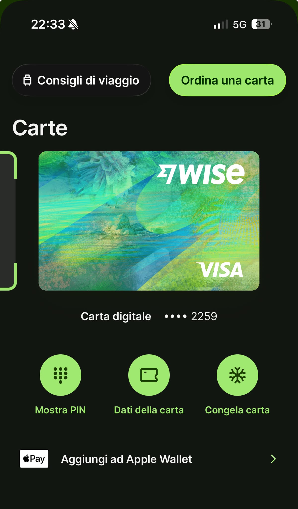

📌 In sintesi
La carta virtuale Wise è gratuita. La carta fisica costa 7€ una tantum (10,40€+ per la consegna espressa). I prelievi ATM sono gratuiti fino a 250€ al mese, poi si paga il 2,69% sull'eccedenza. Nessuna commissione nascosta sugli acquisti all'estero: si spende al tasso di cambio reale. Compatibile con Apple Pay e Google Pay.

La mia carta digitale Wise Visa, attivata subito dopo l'apertura del conto, con le opzioni per mostrare il PIN, vedere i dati della carta, congelarla e aggiungerla ad Apple Wallet.
Carta virtuale vs carta fisica
Appena apri il conto puoi attivare subito la carta virtuale, gratuita, utile per pagamenti online e per aggiungerla ad Apple Pay o Google Pay: è quella che ho attivato io per primo test, con l'opzione "Aggiungi ad Apple Wallet" visibile direttamente nell'app. Se vuoi pagare in negozio o prelevare contanti, devi ordinare la carta fisica.
| Servizio | Costo |
|---|---|
| Carta virtuale | Gratuita |
| Carta fisica (consegna standard) | 7€ una tantum |
| Carta fisica (consegna espressa, 1-2 giorni) | Da 10,40€ |
| Sostituzione carta (persa/danneggiata) | 4€ |
| Sostituzione carta scaduta | Gratuita |
| Ricarica e-wallet esterni | 2% |
"Prima di ordinare la carta fisica, ho attivato subito quella virtuale per iniziare a testare i pagamenti online. Se ti serve solo per acquisti da remoto, potresti non avere nemmeno bisogno di quella fisica."
Limiti di prelievo ATM
Per le carte emesse in Italia, i limiti standard sono:
- 1.000€ per singolo prelievo
- 1.500€ al giorno
- 3.000€ al mese (fino a 4.000€ se imposti il limite massimo nell'app)
Sul costo: i primi 250€ prelevati ogni mese sono gratuiti. Superata questa soglia, si applica una commissione del 2,69% sull'importo eccedente, calcolata per conto su base mensile. Alcuni ATM possono applicare una commissione propria, visibile prima di confermare il prelievo.
Calcola quanto pagheresti di commissione sui tuoi prelievi →
Spendere all'estero con la carta Wise
Se possiedi già la valuta in cui stai pagando, la spesa è gratuita: nessuna commissione per l'uso della carta all'estero. Se non possiedi quella valuta, Wise applica una commissione di conversione al tasso di cambio reale, mostrata prima del pagamento.
Apple Pay e Google Pay
Le carte Wise emesse in un paese dello Spazio Economico Europeo, Italia inclusa, sono compatibili con Apple Pay e Google Pay. Puoi aggiungerle direttamente dall'app Wise, senza inserire manualmente i dati nel wallet del telefono.
Domande frequenti sulla carta Wise
Quanto costa la carta Wise?
La virtuale è gratuita. La fisica costa 7€ (consegna standard) o da 10,40€ per la consegna espressa. Sostituzione: 4€.
Quali sono i limiti di prelievo ATM?
1.000€ per operazione, 1.500€ al giorno, 3.000€ al mese (o 4.000€ con limite massimo). Primi 250€/mese gratuiti, poi 2,69% sull'eccedenza.
La carta Wise funziona con Apple Pay e Google Pay?
Sì, per le carte emesse in un paese SEE, aggiungibili direttamente dall'app.
Serve la carta fisica per usare Wise?
No, la carta virtuale gratuita basta per pagamenti online e wallet digitali. La fisica serve solo per pagare in negozio o prelevare contanti.
Altre guide Wise
- 📘 Guida introduttiva
- 🎁 Bonus e programma inviti
- 💱 Commissioni di cambio
- 📈 Interessi Wise
- 🔒 Wise è sicuro?
- ❓ FAQ complete
Vuoi richiedere la carta Wise?
Apri il conto gratuito e attiva subito la carta virtuale, oppure ordina quella fisica.
Apri Wise oraUltimo aggiornamento: